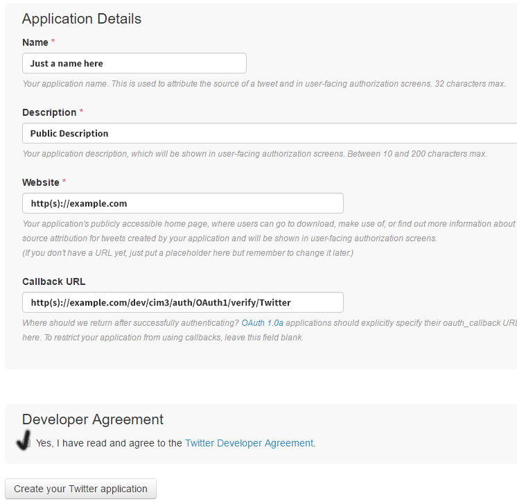

Configuring Social Login
- adding providers in admin panel
- explanation for each active social network :FB, G+, Twitter, Linkedin, etc
- with screenshots etc off course
Setting the providers
The data from our providers will be saved in the database and can be configured via the adminpanel. These providers - the leading social networks - offer an OAuth platform to developers and we use the plugin from ThePHPLeague, maintained on Github, to offer a safe platform to communicate through.
Providers can be added, remove, enabled and disabled through the adminpanel. You can also disable the social login via the site settings page.
Almost al providers allow you to upload an application icon. This will not be explained separately for each provider as that would be redundant.
Creating a new social provider is easy: Click on OAuth providers in adminpanel and then Add to see this form:
So you see it is very easy to add anything in there. Currently the system relies on a provider with First letter Capitalized. Your input will be automatically converted to this format so you don't have to worry about this.
application/libraries/Oauth(1 or 2)/. Just use the file name, it's identical.
Step-by-step guides
Each provider has a different developer platform where OAuth needs to be configured. Some are easier than others but all are subject to constant change. The manual might contain outdated images from time to time in between updates.
- Go to the Facebook developer website and log in.
- At the right top go to My apps and click Add A New App or click the green button that tells you the same.
- Create an initial app with display name and contact email. Choose a category that suits best. Click on Create App ID and confirm the security code.
- Now click on Get Started next to FaceBook login (first in the list).
-
On the settings page we enter the Valid OAuth redirect URIs:
use your domain (plus subfolders if any) with
auth/oauth2/verify/Facebook

- In the menu go to Settings - Basic. Here we will find the app ID and secret which we need to use to create a new provider in our adminpanel.
- Click on Show and copy the secret, then go to adminpanel - OAuth Providers and add a new social login option as explained above.
- We continue with the App Domains: to be sure just put in both domains with and without www.
- Click on Add Platform and choose Website - I add just the root domain here and it seems to work fine.

To make your app available go to App Review in the menu and set it to live here.
You can also find an alternative explanation on the google website.
- Go to Google Developer Console
- Click the dropdown and select Create a new project. Choose a name for the project.
- Click on Credentials in the menu en choose "Create Credentials" then select Oauth Client ID from the dropdown.
The following screen appears:
- Choose a required name;
- Add the correct return url with yourdomain and then
auth/oauth2/verify/Googleas path. - You will be asked to fill out the Consent screen:
- When finished a popup will appear with the credential data. You can also consult this data by clicking on Credentials in the left menu and then selecting your project.
- Go to Application Management and click on Create New App.
- Fill out the details:

- We arrive at the Details page where there's some data available from this app.
- Consumer Key (API Key) and Consumer Secret (API Secret) can be grabbed from the Keys and Access Tokens page.
REQUIRED: Adding permissions to grab the email address
To enable the email address in the callback data we need to go to Settings and enter a value for Privacy Policy URL and Terms of Service URL.
RECOMMENDED: Allow application
To make sure we do not have to re-authenticate with Twitter every time we need to check the box that says "Allow this application to be used to Sign in with Twitter".
Full example below:
Github
- Go to Your Github Profile.
- Enable your email address.
- Click on OAuth applications in the left column down below.
- Register a new application.
- Fill out the details like always.
- Once finished you will immediately see the tokens to add to the adminpanel provider section.
- Go to LinkedIn developer console.
- Click Create Application. Linkedin requires some more information then others with a required business email and phone number and also a logo.
- Repeat the same steps from above but use the correct OAuth link: I think by now we get it but here it
is anyway:
https://example.com/auth/oauth2/verify/LinkedIn. - Your keys can be found on the Authentication page. Check the r_emailaddress box there now.
- Set the app to live in Settings.
Microsoft
- Go to Your applications.
- Click on Add An App, choose a name for your project.
- You are immediately presented with your Application Id:
- Generate a new password for this Application ID and copy it into CIMembership.
- Click on Add Platform and add the correct redirect URL as shown above.
- You are immediately presented with your Application Id.
Paypal
- Go to Paypal Developer and log in.
- Paypal has an excellent manual where we can easily get lost because it's so vast. It's nice to have but it's also a bit annoying. We want the "Log In With PayPal" option and it can be found after clicking Dashboard at the top right of the screen. There could be regional differences.
- We need to create new REST API credentials so click on that and choose an app name.
- Now you will get client secret and id - grab them now and add a new provider via adminpanel.
- You can toggle between live and sandbox and the keys will be different. I use live for the demo and sandbox for my dev box.
- You can manage both sandbox and live in one account so that is a big plus. Thanks, Paypal. If you are going live turn off the sandbox setting in the library. (application/libraries/Oauth1 or OAuth2). It is off by default though.
Stripe
- Is a little different - their member control panel is complex.
- Go to The dashboard - if you are asked to initialize a few things just go ahead.
- Click on your name at the right top and choose Account Settings:
- Go to API Key to know your app secret for both test and live.
- Stripe also offers us the possibility to manage both test and live environments in one application.
- Go to Connect - Platform Settings and do the necessary as always. You will find your client_id here.
Development vs Production
You are probably going to set all this up two times when you need a permanent development environment like I do. You can try to add multiple URLs and it will work for some providers but I prefer to keep them separate because the development environment needs to remain private. With Facebook you can disable live access to your apps but not all providers have this option.
Other
More providers will be added in the next version: VK, Microsoft, Steam, etc. will be tested thoroughly before making it public.